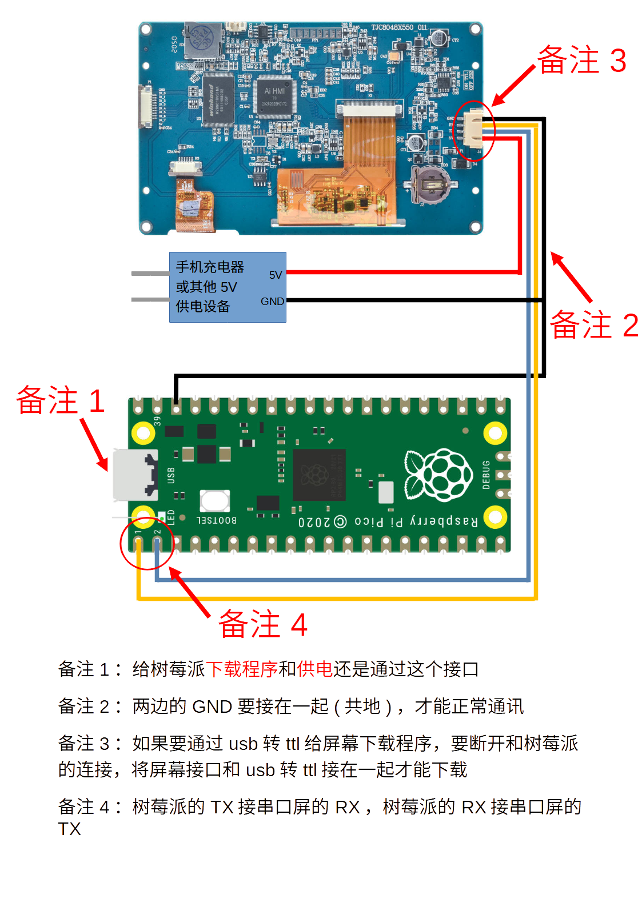

树莓派pico使用MicroPython与串口屏通讯
如何安装树莓派pico开发工具和配置请参考 树莓派Pico开发软件安装(Thonny)及烧录(flash)
树莓派pico使用MicroPython与串口屏通讯工程下载
串口屏怎么下载程序
树莓派pico使用MicroPython与串口屏通讯的连接方式

树莓派pico使用MicroPython与串口屏通讯代码
注意
以下代码仅为演示代码，用于测试显示屏能实现最基本的通信功能，如果您需要在正式产品中进行使用，请根据自己的需求对代码进行相应的优化和修改，或以自己的方式实现相应的功能
# 树莓派pico的GND接串口屏或串口工具的GND,共地
# 树莓派pico的GP0接串口屏或串口工具的RX
# 树莓派pico的GP1接串口屏或串口工具的TX
# 树莓派pico的5V接串口屏的5V,如果是串口工具,不用接5V也可以
import machine
import time
# 一帧的长度
FRAME_LENGTH=7
a=0
nowtime=0
# 这里设置串口 0 的波特率为 115200
uart = machine.UART(0, baudrate=115200)
# 使用 25 号引脚作为 LED 连接引脚
led_pin = machine.Pin(25, machine.Pin.OUT)
# 发送结束符
def sendEnd():
# 要发送的十六进制数据
hex_data = [0xff, 0xff, 0xff]
# 将十六进制数据转换为字节数组并发送
uart.write(bytearray(hex_data))
# 定义定时器回调函数
def tm0(timer):
global a
str = "n0.val={}".format(a)
uart.write(str)
sendEnd()
str = "t0.txt=\"现在是{}\"".format(a)
uart.write(str)
sendEnd()
str = "click b0,1"
uart.write(str)
sendEnd()
time.sleep(0.05)
str = "click b0,0"
uart.write(str)
sendEnd()
a+=1
# 创建一个定时器
timer = machine.Timer()
# 初始化定时器，每 1 秒钟触发一次回调函数
timer.init(period=1000, mode=machine.Timer.PERIODIC, callback=tm0)
# ubuffer用于存放串口数据
ubuffer = []
while True:
# 如果串口有数据，全部存放入ubuffer
while uart.any():
data = uart.read()
if data:
ubuffer.extend(data)
# 当ubuffer的长度大于等于一帧的长度时
if len(ubuffer) >= FRAME_LENGTH:
# 判断帧头帧尾
if ubuffer[0] == 0x55 and ubuffer[4] == 0xff and ubuffer[5] == 0xff and ubuffer[6] == 0xff:
# 如果下发的是led数据
if ubuffer[1] == 0x01:
status = ""
if ubuffer[3] == 0x01:
status = "on"
if ubuffer[2] == 0x00:
led_pin.value(1)
else:
status = "off"
if ubuffer[2] == 0x00:
led_pin.value(0)
str = "msg.txt=\"led {} is {}\"".format(ubuffer[2], status)
uart.write(str)
sendEnd()
# 如果下发的是进度条h0的数据
elif ubuffer[1] == 0x02:
str = "msg.txt=\"h0.val is {}\"".format(ubuffer[2])
uart.write(str)
sendEnd()
# 如果下发的是进度条h1的数据
elif ubuffer[1] == 0x03:
str = "msg.txt=\"h1.val is {}\"".format(ubuffer[2])
uart.write(str)
sendEnd()
# 删除1帧数据
del ubuffer[:FRAME_LENGTH]
else:
# 删除最前面的1个数据
del ubuffer[0]
其他参考链接